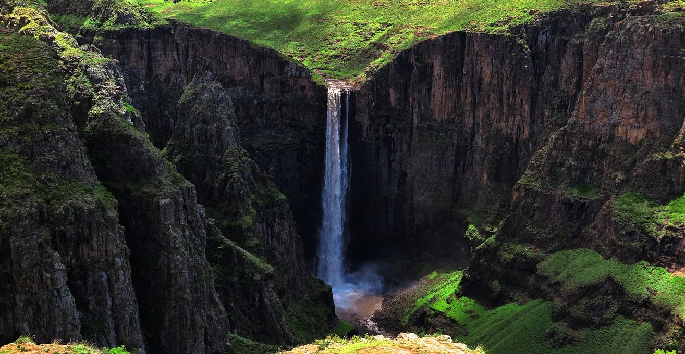
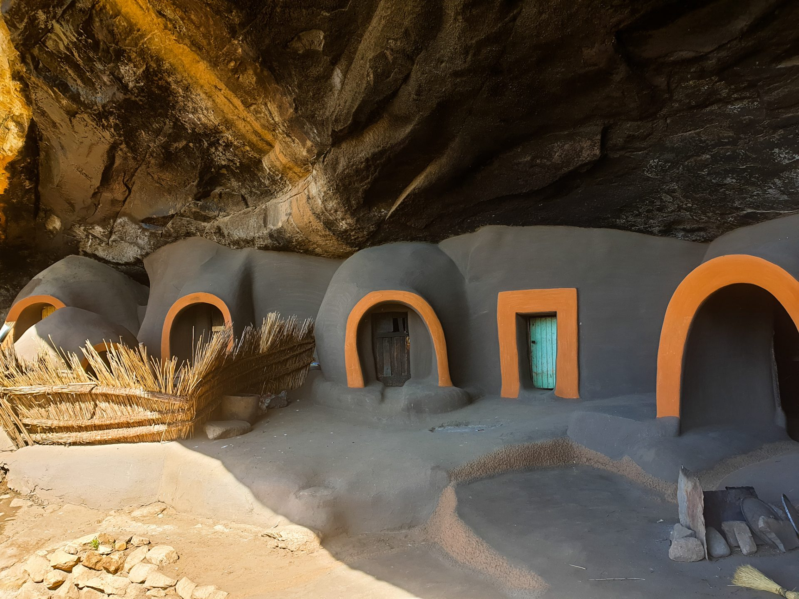

Maletsunyane is the highest waterfall in Lesotho!
Learn More
sehlabathebe, Lesotho
Sehlabathebe-National-Park is the land of wonders and heartwhelming ,nature is divest in sehlabathebe
Learn More

Botha-Bothe,Lesotho
Liphofung is the place where the founder of Basotho stay with his army.
Learn More